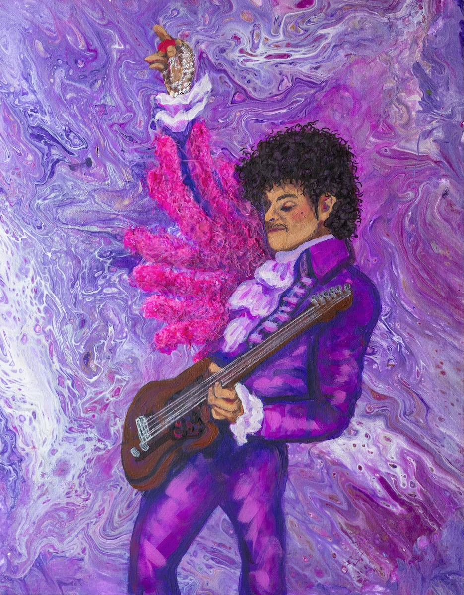
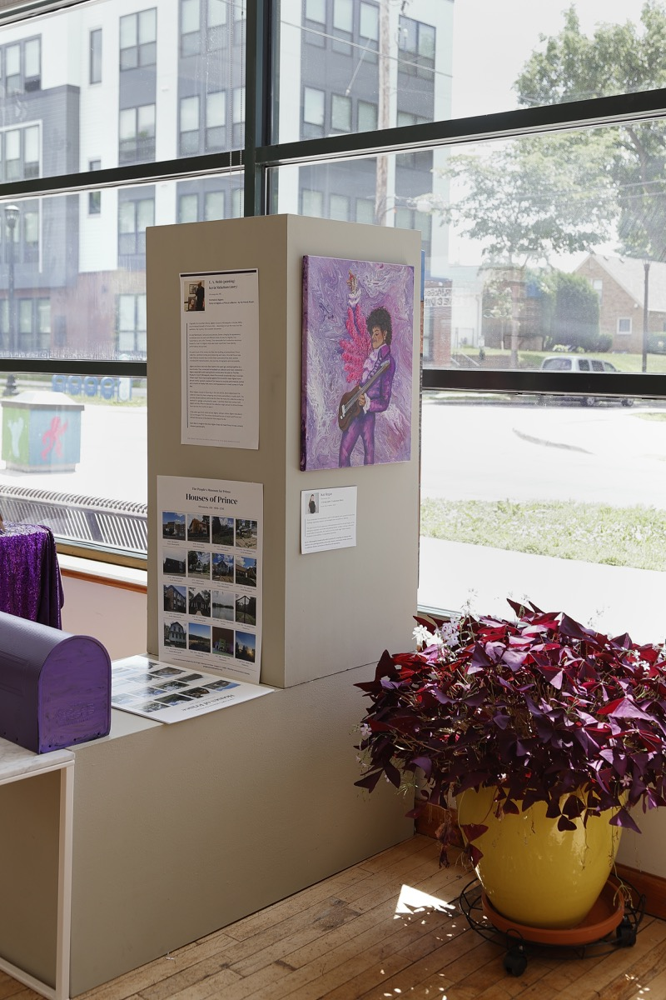
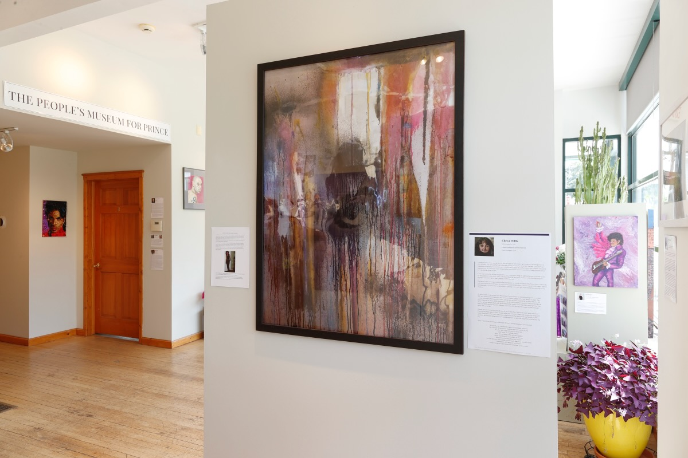
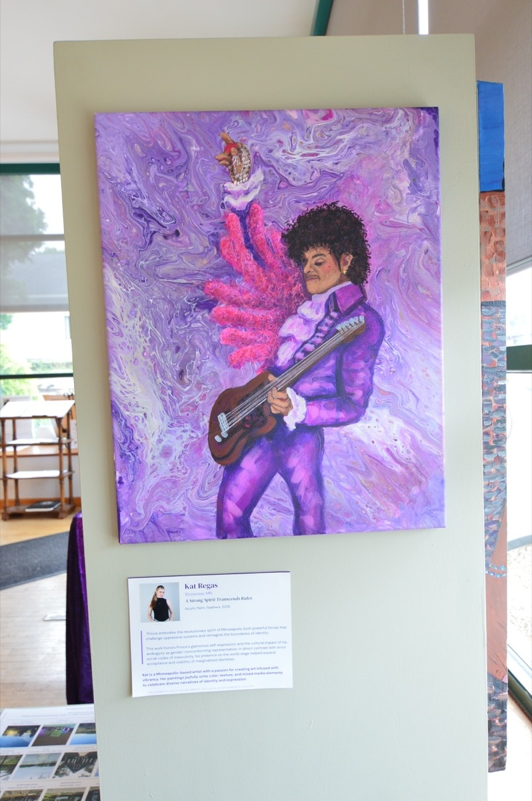
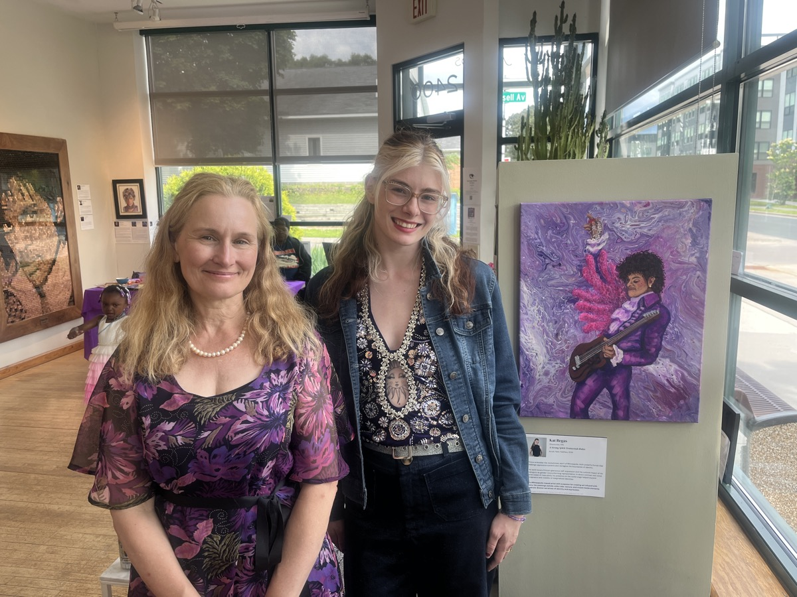

Photo: Daniel R. Pratt
Kat Regas
Shoreview, MN
A Strong Spirit Transcends Rules
Acrylic Paint, Feathers · 2026
Prince embodies the revolutionary spirit of Minneapolis, both powerful forces that challenge oppressive systems and reimagine the boundaries of identity. This work honors Prince's glamorous self-expression and the cultural impact of his androgyny as gender-nonconforming representation. In direct contrast with strict social codes of masculinity, his presence on the world stage helped expand acceptance and visibility of marginalized identities.
Kat is a Minneapolis-based artist with a passion for creating art infused with vibrancy. Her paintings joyfully unite color, texture, and mixed media elements to celebrate diverse narratives of identity and expression.

Acrylic Paint, Feathers · 2026
At the Museum — Roberts Gallery




Image Credits
- Artwork images courtesy of the contributors. All rights reserved.
- Installation photography: Daniel R. Pratt · Kirk Thoren
- Event photography: Jill Boogren